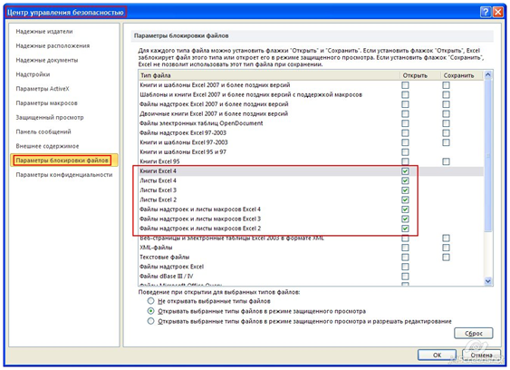

|
Если вы работаете с книгами Excel древних форматов (таких, например, как Excel 4), В настройках Excel 2010 для этого предусмотрены специальные опции (скриншот)  Мало того, что Excel блокирует редактирование этих устаревших файлов, Избежать проблем при работе с такими файлами (а проблемы возможны, если вы обрабатываете макросом множество файлов, полученных от разных организаций), можно, если при открытии надстройки (файла с макросами) выполнить следующий код: Sub DeleteFileBlock() On Error Resume Next Key$ = "HKEY_CURRENT_USER\Software\Microsoft\Office\14.0\Excel\Security\FileBlock\" arr = Array("XL2Macros", "XL2Worksheets", "XL3Macros", "XL3Worksheets", _ "XL4Macros", "XL4Workbooks", "XL4Worksheets") For Each Item In arr CreateObject("WScript.Shell").RegWrite Key$ & Item, 0, "REG_DWORD" Next End Sub Достаточно поместить вызов этого макроса в процедуру Workbook_Open, - и ограничения будут сниматься при каждом запуске вашей надстройки.
Аналогично можно сделать макрос, включающий опцию «Доверять доступ к объектной модели проектов VBA»: Sub Enable_AccessVBOM() ' включает программный доступ к объектной модели проекта VBA On Error Resume Next Key$ = "HKEY_CURRENT_USER\Software\Microsoft\Office\" & Application.Version & _ "\Excel\Security\AccessVBOM" CreateObject("WScript.Shell").RegWrite Key$, 1, "REG_DWORD" End Sub Этот код припишет в реестре Windows (в ветке с настройками безопасности Excel) необходимые параметры, и вы макросом сможете обращаться к свойствам проекта VBA
Отключить доступ тоже можно - достаточно поменять в макросе записываемое в реестр значение (с 1 на 0): Sub Disable_AccessVBOM() ' отключает программный доступ к объектной модели проекта VBA On Error Resume Next Key$ = "HKEY_CURRENT_USER\Software\Microsoft\Office\" & Application.Version & _ "\Excel\Security\AccessVBOM" CreateObject("WScript.Shell").RegWrite Key$, 0, "REG_DWORD" End Sub
Многие пользователи надстроек (и других файлов Excel, содержащих макросы), при каждом запуске книги Excel во всплывающем окне жмут кнопку «Включить макросы». Что, в принципе, неудивительно, т.к. не все знают, как раз и навсегда включить макросы в разных версиях Excel. Чтобы избавить пользователя от ежедневного уведомления об «опасных» макросах, можно использовать такой код: Sub Enable_AccessVBOM_and_Macro() On Error Resume Next Key$ = "HKEY_CURRENT_USER\Software\Microsoft\Office\" & Application.Version & _ "\Excel\Security\"
' включаем программный доступ к объектной модели проекта VBA CreateObject("WScript.Shell").RegWrite Key$ & "AccessVBOM", 1, "REG_DWORD"
' ставим низкий уровень безопасности (применится после перезапуска Excel) CreateObject("WScript.Shell").RegWrite Key$ & "VBAWarnings", 1, "REG_DWORD" End Sub После выполнения этого макроса, уровень безопасности в Excel будет изменен на «низкий» (при следующем запуске Excel), и уведомления об отключенных макросах (с предложением их включить) появляться не будут. PS: C одной стороны, нехорошо без уведомления пользователя изменять настройки безопасности его программ.
|
{kind=link}